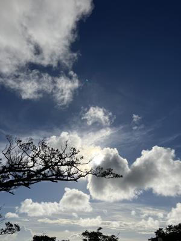
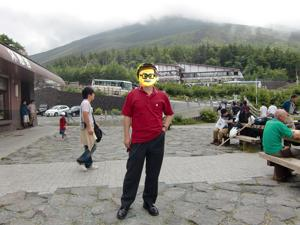
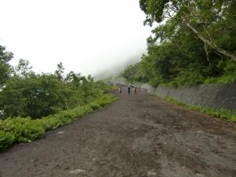

うるがいの話 ある日
最新: 軽装で登山【うるがいの話 ある日】とは 一日だけのプログです
『うるがいの話』の最新一日だけのプログで、通信料が少なく経済的だ。カニの画像をクリックすると全ての日付が載る『うるがいの話』サイトを表示します
|
|
【うるがいの話】 うるがい(ｳﾙｶﾞｲ urugai)とは、『もずくがに』の名前でとても大きくなります。 |
|---|---|
|
|
【カミマヤーの話】 猫のことを方言でマヤーといいます。カミマヤー（kamimayaa）とは、神の猫のことです。 |
|
【たながぁの音楽】 たながぁ（ﾀﾅｶﾞｰ tanagaa）とは手長えびのことで、何種類かあり大きいのは車 エビぐらいになります。 |

|
【ぶながぁの話】 ぶながぁ(ﾌﾞﾅｶﾞｰ bunagaa)とは、赤い髪の毛、赤い身体、そして身長は１ｍ２０ｃｍ ぐらい、川の蟹を食べているの目撃された。場所は沖縄県国頭郡大宜味村のと ある村僕の隣近所に住んでいる爺さんから、聞いた話です。 |
|
|
【ギーマの話】 ギーマ(giima)とは、山原の里山に咲くスズランに似た、 花を付けます。実は食べられます、 気が付くと口の周りが紫になっています。 |
2024年07月11日 (木）軽装で登山
17:20

富士山の山開きが、テレビから放映される。そして、軽装を戒める。フムフ
ム、２０１０年７月３１日、研修を終え沖縄に最終便で帰る前に、朝早くホ
テルを出て新宿から、バスで富士山を目指す。１２時過ぎに５合目に着き、
１３時半には帰りのバスを待つ、僅か数時間の滞在だった。革靴のままで登
山道まで、ホイホイでいているので登山者からは冷たい視線を感じたが。
１２時２６分 デジカメ写真の自撮り 標高は２４００ｍ（拡大しません）

１２時４３分 せっかくなので、少し登ることにした

１３：００分 案内の標識がある
１３：０６分 本格的な登山道である、ここで引き返す
１３：１０分 山頂へ向け登山する人達とすれ違う
１３：３１分 帰りのバスを待つ

弾丸登山でないが、いい思い出である。バスを待つときは、さすがに寒くな
ったので長袖のシャカシャカをつけた。飛行機の最終便の出発時刻には余裕
を持って着いたと記憶している。
１７時０５分 ビットコインの総資産 ￥２７、３１１（↓４３４）